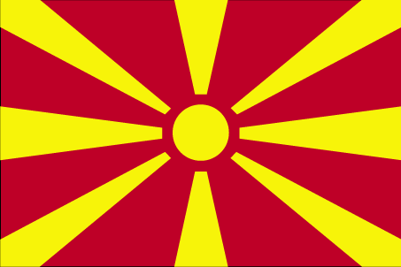
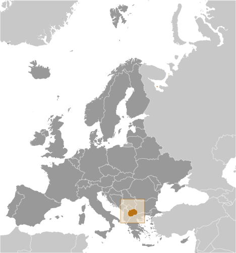
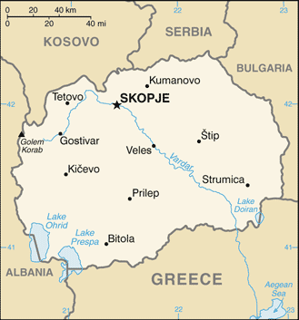

Europe :: MACEDONIA
Introduction :: MACEDONIA
-
Macedonia gained its independence peacefully from Yugoslavia in 1991. Greek objection to Macedonia’s name, insisting it implies territorial pretensions to the northern Greek province of the same name, and democratic backsliding have stalled the country’s movement toward Euro-Atlantic integration. Immediately after Macedonia declared independence, Greece sought to block Macedonian efforts to gain UN membership if the name “Macedonia” was used. Macedonia was eventually admitted to the UN in 1993 as “The Former Yugoslav Republic of Macedonia,” and at the same time it agreed to UN-sponsored negotiations on the name dispute. In 1995, Greece lifted a 20-month trade embargo and the two countries agreed to normalize relations, but the issue of the name remained unresolved and negotiations for a solution are ongoing. Since 2004, the US and over 130 other nations have recognized Macedonia by its constitutional name, Republic of Macedonia. Ethnic Albanian grievances over perceived political and economic inequities escalated into an insurgency in 2001 that eventually led to the internationally brokered Ohrid Framework Agreement (OFA), which ended the fighting and established guidelines for constitutional amendments and the creation of new laws that enhanced the rights of minorities. Relations between Macedonians and ethnic Albanians remain fragile, however.Macedonia has been engulfed in a political crisis that began after the 2014 legislative and presidential election, and which escalated in 2015 when the opposition party began releasing wiretap content that it alleged showed widespread government corruption. Although Macedonia became an EU candidate in 2005, the country still faces challenges, including overcoming the political crisis, fully implementing the OFA, resolving the outstanding name dispute with Greece, improving relations with Bulgaria, halting democratic backsliding, and stimulating economic growth and development. At the 2008 NATO Summit in Bucharest, Romania, the Allies agreed that Macedonia would be invited to join the Alliance as soon as a mutually acceptable resolution to the name dispute was reached with Greece.
Geography :: MACEDONIA
-
Southeastern Europe, north of Greece41 50 N, 22 00 EEuropetotal: 25,713 sq kmland: 25,433 sq kmwater: 280 sq kmcountry comparison to the world: 150slightly larger than Vermonttotal: 838 kmborder countries (5): Albania 181 km, Bulgaria 162 km, Greece 234 km, Kosovo 160 km, Serbia 101 km0 km (landlocked)none (landlocked)warm, dry summers and autumns; relatively cold winters with heavy snowfallmountainous with deep basins and valleys; three large lakes, each divided by a frontier line; country bisected by the Vardar Rivermean elevation: 741 melevation extremes: lowest point: Vardar River 50 mhighest point: Golem Korab (Maja e Korabit) 2,764 mlow-grade iron ore, copper, lead, zinc, chromite, manganese, nickel, tungsten, gold, silver, asbestos, gypsum, timber, arable landagricultural land: 44.3%arable land 16.4%; permanent crops 1.4%; permanent pasture 26.5%forest: 39.8%other: 15.9% (2011 est.)1,280 sq km (2012)a fairly even distribution throughout most of the country, with urban areas attracting larger and denser populationshigh seismic risksair pollution from metallurgical plantsparty to: Air Pollution, Biodiversity, Climate Change, Climate Change-Kyoto Protocol, Desertification, Endangered Species, Hazardous Wastes, Law of the Sea, Ozone Layer Protection, Wetlandssigned, but not ratified: none of the selected agreementslandlocked; major transportation corridor from Western and Central Europe to Aegean Sea and Southern Europe to Western Europe
People and Society :: MACEDONIA
-
2,103,721 (July 2017 est.)country comparison to the world: 145noun: Macedonian(s)adjective: MacedonianMacedonian 64.2%, Albanian 25.2%, Turkish 3.9%, Romani 2.7%, Serb 1.8%, other 2.2% (2002 est.)note: Romani populations are usually underestimated in official statistics and may represent 6.5–13% of Macedonia’s populationMacedonian (official) 66.5%, Albanian 25.1%, Turkish 3.5%, Romani 1.9%, Serbian 1.2%, other 1.8% (2002 est.)note: minority languages are co-official with Macedonian in municipalities where they are spoken by at least 20% of the population; Albanian is co-official in Tetovo, Brvenica, Vrapciste, and other municipalities; Turkish is co-official in Centar Zupa and Plasnica; Romani is co-official in Suto Orizari; Aromanian is co-official in Drusevo; Serbian is co-official in Cucer SandevoMacedonian Orthodox 64.8%, Muslim 33.3%, other Christian 0.4%, other and unspecified 1.5% (2002 est.)0-14 years: 17.17% (male 187,063/female 174,196)15-24 years: 13.41% (male 145,716/female 136,444)25-54 years: 43.6% (male 465,862/female 451,321)55-64 years: 12.41% (male 128,024/female 132,955)65 years and over: 13.41% (male 121,019/female 161,121) (2017 est.)total dependency ratio: 41.6youth dependency ratio: 23.8elderly dependency ratio: 17.7potential support ratio: 5.6 (2015 est.)total: 37.9 yearsmale: 36.8 yearsfemale: 39 years (2017 est.)country comparison to the world: 650.17% (2017 est.)country comparison to the world: 18811.4 births/1,000 population (2017 est.)country comparison to the world: 1729.2 deaths/1,000 population (2017 est.)country comparison to the world: 63-0.5 migrant(s)/1,000 population (2017 est.)country comparison to the world: 124a fairly even distribution throughout most of the country, with urban areas attracting larger and denser populationsurban population: 57.3% of total population (2017)rate of urbanization: 0.24% annual rate of change (2015-20 est.)SKOPJE (capital) 503,000 (2015)at birth: 1.08 male(s)/female0-14 years: 1.07 male(s)/female15-24 years: 1.07 male(s)/female25-54 years: 1.03 male(s)/female55-64 years: 0.96 male(s)/female65 years and over: 0.75 male(s)/femaletotal population: 0.99 male(s)/female (2016 est.)26.8 years (2014 est.)8 deaths/100,000 live births (2015 est.)country comparison to the world: 157total: 7.4 deaths/1,000 live birthsmale: 7.6 deaths/1,000 live birthsfemale: 7.1 deaths/1,000 live births (2017 est.)country comparison to the world: 160total population: 76.4 yearsmale: 73.8 yearsfemale: 79.2 years (2017 est.)country comparison to the world: 881.6 children born/woman (2017 est.)country comparison to the world: 18040.2% (2011)6.5% of GDP (2014)country comparison to the world: 932.8 physicians/1,000 population (2013)4.5 beds/1,000 population (2011)improved:urban: 99.8% of populationrural: 98.9% of populationtotal: 99.4% of populationunimproved:urban: 0.2% of populationrural: 1.1% of populationtotal: 0.6% of population (2015 est.)improved:urban: 97.2% of populationrural: 82.6% of populationtotal: 90.9% of populationunimproved:urban: 2.8% of populationrural: 17.4% of populationtotal: 9.1% of population (2015 est.)<.1% (2016 est.)<500 (2016 est.)<100 (2016 est.)22.4% (2016)country comparison to the world: 771.3% (2011)country comparison to the world: 128definition: age 15 and over can read and writetotal population: 97.8%male: 98.8%female: 96.8% (2015 est.)total: 13 yearsmale: 13 yearsfemale: 13 years (2014)total: 47.3%male: 49.7%female: 43.3% (2014 est.)country comparison to the world: 4
Government :: MACEDONIA
-
conventional long form: Republic of Macedoniaconventional short form: Macedonialocal long form: Republika Makedonijalocal short form: Makedonijanote: the provisional designation used by the UN, EU, and NATO is the "former Yugoslav Republic of Macedonia" (FYROM)former: People's Republic of Macedonia, Socialist Republic of Macedoniaetymology: the country name derives from the ancient kingdom of Macedon (7th to 2nd centuries B.C.)parliamentary republicname: Skopjegeographic coordinates: 42 00 N, 21 26 Etime difference: UTC+1 (6 hours ahead of Washington, DC, during Standard Time)daylight saving time: +1hr, begins last Sunday in March; ends last Sunday in October70 municipalities (opstini, singular - opstina) and 1 city* (grad); Aracinovo, Berovo, Bitola, Bogdanci, Bogovinje, Bosilovo, Brvenica, Caska, Centar Zupa, Cesinovo-Oblesevo, Cucer Sandevo, Debar, Debarca, Delcevo, Demir Hisar, Demir Kapija, Dojran, Dolneni, Gevgelija, Gostivar, Gradsko, Ilinden, Jegunovce, Karbinci, Kavadarci, Kicevo, Kocani, Konce, Kratovo, Kriva Palanka, Krivogastani, Krusevo, Kumanovo, Lipkovo, Lozovo, Makedonska Kamenica, Makedonski Brod, Mavrovo i Rostusa, Mogila, Negotino, Novaci, Novo Selo, Ohrid, Pehcevo, Petrovec, Plasnica, Prilep, Probistip, Radovis, Rankovce, Resen, Rosoman, Skopje*, Sopiste, Staro Nagoricane, Stip, Struga, Strumica, Studenicani, Sveti Nikole, Tearce, Tetovo, Valandovo, Vasilevo, Veles, Vevcani, Vinica, Vrapciste, Zelenikovo, Zelino, Zrnovci8 September 1991 (referendum by registered voters endorsed independence from Yugoslavia)Independence Day, 8 September (1991); also known as National Dayhistory: several previous; latest adopted 17 November 1991, effective 20 November 1991amendments: proposed by the president of the republic, by the government, by at least 30 members of the Assembly, or by petition of at least 150,000 citizens; draft amendments require approval by majority vote of Assembly members, followed by public debate; final passage requires two-thirds majority vote of the Assembly; amended several times, last in 2015 (2016)civil law system; judicial review of legislative actshas not submitted an ICJ jurisdiction declaration; accepts ICCt jurisdictioncitizenship by birth: nocitizenship by descent only: at least one parent must be a citizen of Macedoniadual citizenship recognized: noresidency requirement for naturalization: 8 years18 years of age; universalchief of state: President Gjorge IVANOV (since 12 May 2009)head of government: Prime Minister Zoran ZAEV (since 31 May 2017)cabinet: Council of Ministers elected by the Assembly by simple majority vote; note - the 2014 cabinet formed by the government coalition parties VMRO-DPMNE, DUI, and several small parties; as a result of an agreement reached in July 2015 between the largest parties to resolve a 16-month opposition boycott of the Assembly, several minister and deputy minister positions were also given to the opposition SDSM from November 2015 through May 2016 in preparation for parliamentary elections originally scheduled for 24 April 2016, and pushed back to 5 June 2016, and again from September to December 2016elections/appointments: president directly elected by absolute majority popular vote in 2 rounds if needed for a 5-year term (eligible for a second term); election last held on 13 and 27 April 2014 (next to be held in 2019); following legislative elections, the leader of the majority party or majority coalition is usually elected prime minister by the Assemblyelection results: Gjorge IVANOV reelected president in second round; percent of vote - Gjorge IVANOV (independent) 55.3%, Stevo PENDAROVSKI (SDSM) 41.1%, other 3.6%description: unicameral Assembly or Sobranie (123 seats; 120 members directly elected in multi-seat constituencies by proportional representation vote and 3 directly elected in diaspora constituencies worldwide by simple majority vote, provided candidates meet a specified minimum vote count; members serve 4-year terms)elections: last held on 11 December 2016, with a second round held in one polling station on 25 December 2016 (next to be held in 2020)election results: percent of vote by party - VMRO-DPMNE 38.1%, SDSM coalition 36.7%, BDI 7.3%, Besa Movement 4.9%, Alliance for Albanians 3.1%, PDSh 2.7%, other 7.2%; seats by party - VMRO-DPMNE 51, SDSM coalition 49, BDI 10, Besa Movement 5, Alliance for Albanians 3, PDSh 2highest court(s): Supreme Court (consists of 22 judges); Constitutional Court (consists of 9 judges)judge selection and term of office: Supreme Court judges nominated by the Judicial Council, a 7-member body of legal professionals, and appointed by the Assembly; judge tenure NA; Constitutional Court judges appointed by the Assembly for nonrenewable, 9-year termssubordinate courts: Courts of Appeal; Basic CourtsAlliance for Albanians [Ziadin SELA]Besa Movement [Bilal KASAMI]Democratic Party of Albanians or PDSh [Menduh THACI]Democratic Union for Integration or BDI [Ali AHMETI]Internal Macedonian Revolutionary Organization - Democratic Party for Macedonian National Unity or VMRO-DPMNE [Nikola GRUEVSKI]Social Democratic Union of Macedonia or SDSM [Zoran ZAEV]note: during the 2016 parliamentary elections VMRO-DPMNE and SDSM each led coalitionsConfederation of Free Trade Unions or KSS [Blagoja RALPOVSKI]Federation of Trade Unions of Macedonia or SSM [Zivko MITREVSKI]Trade Union of Education, Science and Culture or SONK [Jakim NEDELKOV]Student PlenumEco Guerilla [Arianit XHAFERI]BIS, CD, CE, CEI, EAPC, EBRD, EU (candidate country), FAO, IAEA, IBRD, ICAO, ICC (NGOs), ICCt, ICRM, IDA, IFAD, IFC, IFRCS, ILO, IMF, IMO, Interpol, IOC, IOM, IPU, ISO, ITU, ITUC (NGOs), MIGA, OAS (observer), OIF, OPCW, OSCE, PCA, PFP, SELEC, UN, UNCTAD, UNESCO, UNHCR, UNIDO, UNIFIL, UNWTO, UPU, WCO, WHO, WIPO, WMO, WTOchief of mission: Ambassador Vasko NAUMOVSKI (since 18 November 2014)chancery: 2129 Wyoming Avenue NW, Washington, DC 20008telephone: [1] (202) 667-0501FAX: [1] (202) 667-2131consulate(s) general: Chicago, Detroit, New Yorkchief of mission: Ambassador Jess L. BAILY (since 12 February 2015)embassy: Str. Samolilova, Nr. 21, 1000 Skopjemailing address: American Embassy Skopje, US Department of State, 7120 Skopje Place, Washington, DC 20521-7120 (pouch)telephone: [389] (2) 310-2000FAX: [389] (2) 310-2499a yellow sun (the Sun of Liberty) with eight broadening rays extending to the edges of the red field; the red and yellow colors have long been associated with Macedoniaeight-rayed sun; national colors: red, yellowname: "Denes nad Makedonija" (Today Over Macedonia)lyrics/music: Vlado MALESKI/Todor SKALOVSKInote: written in 1943 and adopted in 1991 , the song previously served as the anthem of the Socialist Republic of Macedonia while part of Yugoslavia
Economy :: MACEDONIA
-
Since its independence in 1991, Macedonia has made progress in liberalizing its economy and improving its business environment. Its low tax rates and free economic zones have helped to attract foreign investment, which is still low relative to the rest of Europe. Corruption and weak rule of law remain significant problems. Some businesses complain of opaque regulations and unequal enforcement of the law.Macedonia’s economy is closely linked to Europe as a customer for exports and source of investment, and has suffered as a result of prolonged weakness in the euro zone. Unemployment has remained consistently high at about 23%, but may be overstated based on the existence of an extensive gray market, estimated to be between 20% and 45% of GDP, which is not captured by official statistics.Macedonia is working to build a country-wide natural gas pipeline and distribution network. Currently, Macedonia receives its small natural gas supplies from Russia via Bulgaria. In 2016, Macedonia signed a memorandum of understanding with Greece to build an interconnector that could connect to the Trans-Adriatic Pipeline that will traverse the region once complete, or to an LNG import terminal in Greece.Macedonia maintained macroeconomic stability through the global financial crisis by conducting prudent monetary policy, which keeps the domestic currency pegged to the euro, and inflation at a low level. However, in the last two years, the internal political crisis has hampered economic performance, with GDP slowing in 2016, and both domestic private and public investments declining. Fiscal policies were lax, with unproductive public expenditures, including subsidies and pension increases, and rising guarantees for the debt of state owned enterprises, and fiscal targets were consistently missed. In 2016, public debt reached 50.5% of GDP before being revised down to 47.8% of GDP by year’s end, still relatively low compared to its Western Balkan neighbors and the rest of Europe. In 2016, Macedonia issued a Eurobond worth approximately $495 million to finance 2016 and part of 2017 budget needs.$30.26 billion (2016 est.)$29.17 billion (2015 est.)$27.79 billion (2014 est.)note: data are in 2016 dollars; Macedonia has a large informal sector that may not be reflected in these datacountry comparison to the world: 129$10.91 billion (2016 est.)2.4% (2016 est.)3.8% (2015 est.)3.6% (2014 est.)country comparison to the world: 121$14,600 (2016 est.)$14,300 (2015 est.)$13,800 (2014 est.)note: data are in 2016 dollarscountry comparison to the world: 11030.5% of GDP (2016 est.)29% of GDP (2015 est.)29.8% of GDP (2014 est.)country comparison to the world: 111household consumption: 65.3%government consumption: 15.7%investment in fixed capital: 13.3%investment in inventories: 20.3%exports of goods and services: 49.2%imports of goods and services: -63.8% (2016 est.)agriculture: 9.9%industry: 29.7%services: 60.4% (2016 est.)grapes, tobacco, vegetables, fruits; milk, eggsfood processing, beverages, textiles, chemicals, iron, steel, cement, energy, pharmaceuticals, automotive parts7.6% (2016 est.)country comparison to the world: 20948,600 (2016 est.)country comparison to the world: 146agriculture: 16.6%industry: 29.6%services: 53.8% (2016 est.)23.6% (2016 est.)26.1% (2015 est.)country comparison to the world: 19221.5% (2015 est.)lowest 10%: 2.2%highest 10%: 34.5% (2009 est.)33.7 (2015)35.2 (2014)country comparison to the world: 105revenues: $3.038 billionexpenditures: $3.327 billion (2016 est.)27.8% of GDP (2016 est.)country comparison to the world: 97-2.6% of GDP (2016 est.)country comparison to the world: 10447.8% of GDP (2016 est.)46.7% of GDP (2015 est.)note: official data from Ministry of Finance; data cover central government debt; this data excludes debt instruments issued (or owned) by government entities other than the treasury; includes treasury debt held by foreign entitites; excludes debt issued by sub-national entities; there are no debt instruments sold for social fundscountry comparison to the world: 103calendar year-0.2% (2016 est.)-0.3% (2015 est.)country comparison to the world: 383.25% (31 March 2017)3.75% (31 December 2016)note: series discontinued in January 2010; the discount rate has been replaced by a referent rate for calculating the penalty ratecountry comparison to the world: 1046.61% (31 December 2016 est.)7.08% (31 December 2015 est.)country comparison to the world: 117$1.909 billion (31 December 2016 est.)$1.797 billion (31 December 2015 est.)country comparison to the world: 133$4.574 billion (31 December 2016 est.)$4.459 billion (31 December 2015 est.)country comparison to the world: 129$5.01 billion (31 December 2016 est.)$5.308 billion (31 December 2015 est.)country comparison to the world: 127$2.078 billion (31 December 2016)$1.853 billion (31 December 2015)$2.269 billion (31 December 2014)country comparison to the world: 99$-336 million (2016 est.)$-203.6 million (2015 est.)country comparison to the world: 93$3.75 billion (2016 est.)$3.37 billion (2015 est.)country comparison to the world: 116foodstuffs, beverages, tobacco; textiles, miscellaneous manufactures, iron, steel; automotive partsGermany 40.9%, Kosovo 13.5%, Serbia 7.7%, Bulgaria 4.5% (2016)$5.805 billion (2016 est.)$5.393 billion (2015 est.)country comparison to the world: 116machinery and equipment, automobiles, chemicals, fuels, food productsGermany 12.2%, UK 10.7%, Serbia 7.9%, Greece 7.3%, China 6.2%, Italy 5.6%, Turkey 5.1%, Bulgaria 4.6% (2016)$2.755 billion (31 December 2016 est.)$2.471 billion (31 December 2015 est.)country comparison to the world: 110$7.685 billion (31 December 2016 est.)$6.942 billion (31 December 2015 est.)country comparison to the world: 121$6.8 billion (31 December 2016 est.)$6.227 billion (31 December 2015 est.)country comparison to the world: 99$849.1 million (31 December 2016 est.)$666.7 million (31 December 2015 est.)country comparison to the world: 87Macedonian denars (MKD) per US dollar -55.733 (2016 est.)55.733 (2015 est.)55.537 (2014 est.)46.437 (31 December 2013 est.)47.89 (2012 est.)
Energy :: MACEDONIA
-
electrification - total population: 100% (2016)5.303 billion kWh (2016 est.)country comparison to the world: 1206.455 billion kWh (2016 est.)country comparison to the world: 11258.5 million kWh (2016 est.)country comparison to the world: 832.191 billion kWh (2016 est.)country comparison to the world: 542.057 million kW (2016 est.)country comparison to the world: 11264.3% of total installed capacity (2016 est.)country comparison to the world: 1160% of total installed capacity (2016 est.)country comparison to the world: 14032.8% of total installed capacity (2016 est.)country comparison to the world: 652.9% of total installed capacity (2016 est.)country comparison to the world: 1120 bbl/day (2016 est.)country comparison to the world: 169142.3 bbl/day (2014 est.)country comparison to the world: 800 bbl/day (2014 est.)country comparison to the world: 1600 bbl (1 January 2017 es)country comparison to the world: 1670 bbl/day (2016 est.)country comparison to the world: 17320,700 bbl/day (2016 est.)country comparison to the world: 1383,900 bbl/day (2016 est.)country comparison to the world: 10023,400 bbl/day (2016 est.)country comparison to the world: 1120 cu m (2016)country comparison to the world: 168471 million cu m (2015 est.)country comparison to the world: 1080 cu m (2016)country comparison to the world: 14860 million cu m (2015 est.)country comparison to the world: 760 cu m (31 December 2016 )country comparison to the world: 1717.9 million Mt (2013 est.)country comparison to the world: 111
Communications :: MACEDONIA
-
total subscriptions: 368,070subscriptions per 100 inhabitants: 18 (July 2016 est.)country comparison to the world: 105total: 2.223 millionsubscriptions per 100 inhabitants: 106 (July 2016 est.)country comparison to the world: 147general assessment: competition from the mobile-cellular segment of the telecommunications market has led to a drop in fixed-line telephone subscriptionsdomestic: combined fixed-line and mobile-cellular telephone subscribership about 120 per 100 personsinternational: country code - 389 (2017)public service TV broadcaster Macedonian Radio and Television operates 3 national terrestrial TV channels and 2 satellite TV channels; additionally, there are 5 privately owned TV channels that broadcast nationally using terrestrial transmitters, 4 TV channels with concession for cable TV, 5 satellite TV channels broadcasting on a national level, 47 local commercial TV channels, and a large number of cable operators that offer domestic and international programming; the public radio broadcaster operates over multiple stations; there are 3 privately owned radio stations that broadcast nationally and about 75 local commercial radio stations (2017).mk1.475 million70.4% (July 2016 est.)country comparison to the world: 121
Transportation :: MACEDONIA
-
Z3 (2016)10 (2013)country comparison to the world: 155total: 82,438 to 3,047 m: 2under 914 m: 6 (2017)total: 2914 to 1,523 m: 1under 914 m: 1 (2013)gas 262 km; oil 120 km (2017)total: 699 kmstandard gauge: 699 km 1.435-m gauge (223 km electrified) (2017)country comparison to the world: 100total: 14,182 km (includes 242 km of expressways)paved: 9,633 kmunpaved: 4,549 km (2014)country comparison to the world: 126
Military and Security :: MACEDONIA
-
0.97% of GDP (2016)1.05% of GDP (2015)1.08% of GDP (2014)1.17% of GDP (2013)1.23% of GDP (2012)country comparison to the world: 92Army of the Republic of Macedonia (ARM; includes General Staff and subordinate Joint Operational Command, Training and Doctrine Command, Special Operations Regiment) (2012)18 years of age for voluntary military service; conscription abolished in 2008 (2013)
Transnational Issues :: MACEDONIA
-
Kosovo and Macedonia completed demarcation of their boundary in September 2008; Greece continues to reject the use of the name Macedonia or Republic of Macedoniastateless persons: 600 (2016)note: 478,416 estimated refugee and migrant arrivals (January 2015 - November 2017); Macedonia is predominantly a transit country and hosts fewer than 50 refugees and asylum seekers as of September 2017major transshipment point for Southwest Asian heroin and hashish; minor transit point for South American cocaine destined for Europe; although not a financial center and most criminal activity is thought to be domestic, money laundering is a problem due to a mostly cash-based economy and weak enforcement